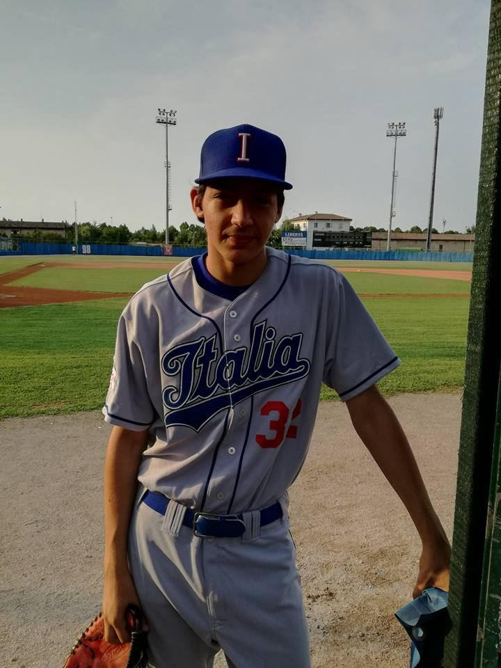
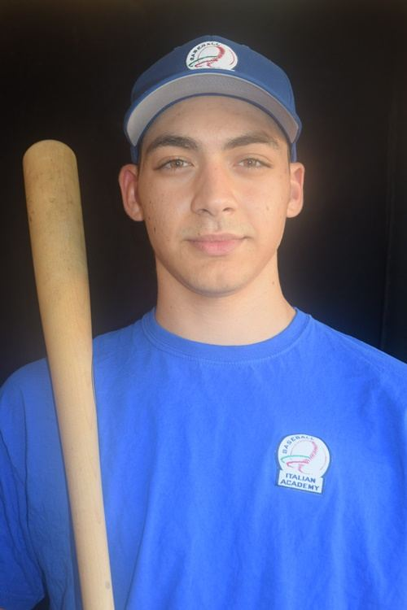

La campagna acquisti dei Lancers Baseball prosegue; nelle scorse settimane avevamo affrontato il tema lanciatori, reparto maggiormente in emergenza in quel periodo. La recente news sull’arrivo di Morese ha sicuramente rasserenato gli animi della tifoseria lastrigiana.
Un pitcher con l’ esperienza di Alejandro può portare, e siamo certi porterà, benefici alla causa del team bianco/blu, non dimentichiamoci però che il parco lanciatori può contare anche sul veterano Vannuzzi, lo sparafiamme dell’est Pistol, il dotato Lapini e altre sorprese che lo staff tecnico ha trovato nella rosa storica, il nostro zoccolo duro.
Nel baseball, come è solito dire, i lanciatori non sono mai troppi, per questo oggi siamo felici di ufficializzare l’acquisto a titolo definitivo di un giovane prospetto, un ragazzo con grandi caratteristiche tecniche e atletiche che negli ultimi anni ha fatto molto parlare di se.
Leonardo Menoni ha sedici anni e da settembre frequenta l’Accademia FIBS di Tirrenia, la sua formazione sportiva è iniziata nel 2011 tra le fila dell’Antella, successivamente il passaggio allo Junior Firenze fino allo scorso anno, stagione in cui Leonardo ha esordito in Serie C con la maglia della Fiorentina; nella stesa stagione, Menoni, vince il campionato regionale U18 con il JF.

Dal 2013 è convocato costantemente nella rappresentativa regionale che partecipa al Torneo delle Regioni: il 2013 e il 2014 a Nettuno con la categoria Ragazzi, a Torino nel 2015 e Sala Baganza nel 2016 con la squadra toscana categoria Allievi.
Lo scorso anno a Vicenza si piazza al secondo posto lanciando nella semifinale con il Piemonte., questa volta la categoria è Cadetti.
A Maggio del 2017 Leonardo supera la difficile selezione per entrare nella prestigiosa Accademia Federale, per tutta l’estate è nel gruppo di atleti che si prepara ai mondiali U18 disputati a Settembre in Canada.
Attualmente risiede proprio a Tirrenia dove lo aspettano grandi impegni come il Torneo delle Accademie a Barcellona a fine marzo ed il ritiro a Messina in previsione degli Europei U18 a Luglio.
La società è molto soddisfatta per questo ulteriore innesto anche se è importante ricordare che, parlando di un giovane lanciatore, si dovrà lavorare molto, e bene, perché il massimo del talento possa venir fuori; una responsabilità che sarà stimolante anche per lo staff tecnico Lancers.
Si coglie l’occasione per ringraziare la società Antella, nella figura di Alessandro Rossi per la disponibilità e collaborazione.